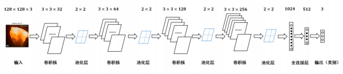
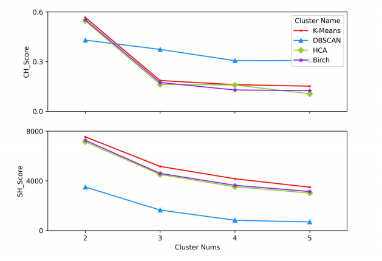

Table of Contents
1 绪论
根据 2020 年我国的电力能源结构及电力行业碳排放占比，以燃煤为主的火电在我国电源构成中占比超过一半，电能的生产绝大部分依靠燃煤发电，且在短期内依然会占据较大的份额。随着高比例可再生能源的利用，燃煤电站锅炉需要在宽负荷下灵活运行，以满足电网深度调峰的要求，这对火力发电机组高效率、低污染排放的运营目标带来了极大挑战。当燃煤锅炉运行中出现燃烧不稳定情况时，不仅会降低能源利用效率，增加污染物排放量，还可能造成热分布不均匀、炉壁热应力增大等问题。因此，有必要对锅炉燃烧状态进行有效监测，以确保锅炉安全稳定运行。
火焰稳定性是一个宽泛的概念，主要与燃料的点火稳定性、空气-燃料比、火焰速率和空气-煤粉混合物的速率平衡以及热量释放、声学振荡之间的热声稳定性有关[4-5]。国内外不少学者对火焰稳定性进行了深入的研究。使用各种检测诊断方法，如平面激光诱导荧光图像[6]，红外吸收[7]和摄像机图像[8,9]等。在理论和实验上都进行了大量的研究，以探索火焰不稳定性的机理和特征。同时，还进行了大量的实验来研究火焰稳定性极限[10]和火焰稳定性图表[11-13]，这些研究的结果通常对应于特定的燃料和燃烧器，并给出了可控制参数的范围。Shimoda[35]通过定性分析指出，燃烧火焰的特征辐射波长应该在 6000~7000 埃范围内。Huang[37]介绍了一种用于在线连续闪烁测量燃烧火焰的新型仪表系统。韩义等[20]就燃煤机组最小边界出力条件下的燃烧稳定性做了相应的研究与分析，并建立了稳定性评价方法。Wang[59]提出了一种新的基于深度学习的方法来识别炉膛燃烧状态和测量放热率。
大量专家学者在研究锅炉炉膛燃烧稳定性表征的定量方法和定性方法中，针对不同情况提供了不同的解决方法。然而，由于实际炉膛的燃烧状态受诸多因素的影响，运行工况复杂，很难得出一个统一的方法，对于燃烧系统状态的准确监测仍然处在一个实验探究的阶段。
针对以上问题，本文提出了一种基于层次聚类的火检稳定性判别卷积神经网络模型。首先，在 ABB 火检分析单元的应用基础上，使用采集得到的火检中间值，结合实际的运行经验及给煤量变化情况将层次聚类树重新作划分，对锅炉炉膛燃烧稳定性进行定性描述；然后，建立起了火焰稳定性判别的卷积神经网络（CNN）模型，由火检中间值进行层次聚类得到的燃烧状态标签作为反应炉膛火焰燃烧状态进行学习，最后验证了该网络对测试数据集的识别情况，取得了较高的准确率。
2 火检稳定性判别模型原理
基于层次聚类的火检稳定性判别卷积神经网络模型，原理如图 1 所示，具体包括以下三个阶段：
阶段1：（数据采集） 阶段2：（层次聚类） 阶段3：（卷积神经网络）
2.1 聚类
聚类是无监督学习的一种，它的概念是将相似的对象归到同一个类中，使得属于同一个类内的数据对象之间相似性尽可能大，同时保证不在同类中的数据对象之间差异性也尽可能地大。聚类同分类的根本区别在于分类是需要事先知道所依据的数据特征，而聚类是要找到这个数据特征，因此，在很多应用中，聚类分析作为一种数据预处理过程，是进一步分析和处理数据的基础。对于现场火检数据来说，在对燃烧状态变化过程不完全了解的情况下，要实现通过某种方法将状态尚不明确的样本进行不同状态的划分，就需要从获得的实际火焰检测数据归纳出一个合适的分类依据。 然而，对于典型的 K-Means 聚类、DBSCAN 密度聚类等方法来说，当分类数目具有实际运行意义时，很难得到新分离的状态之间明确的界限，或是新分离的状态之间的不连续跳变，不很好的保证各个燃烧状态内部相似度高、而燃烧状态间相似度低的聚类标准。而层次聚类本身是通过划分聚类树来获得不同的分类数的，此每增加一类划分数目都可以通过比较之前的划分情况找出新的划分之前的类，且可以根据实际的运行背景，对类别的划分进行调整。
2.2 层次聚类（HCA）
层次聚类（Hierarchical Cluster Analysis, HCA） 是根据给定的簇间距离度量准则，构造和维护一棵由簇和子簇形成的聚类树，直至满足某个终结条件为止，即通过比较火检中间值向量之间的距离，并依靠距离大小关系构建一棵状态划分树。其次层次聚类的结果一般保存为一个可链接的矩阵，可以通过这个链接矩阵将聚类的结果表示成聚类树的形式，在聚类树中可以清楚的显示不同类别按照某种距离度量的划分过程。 根据层次分解是自底向上还是自顶向下形成，层次聚类方法可以分为凝聚的层次聚类和分裂的层次聚类。凝聚的层次聚类这种自底向上的策略首先将每个对象作为一个簇，然后合并这些原子簇为越来越大的簇，直到所有的对象都在一个簇中，或者某个终结条件被满足。绝大多数层次聚类方法属于这一类，它们只是在簇间相似度的定义上有所不同。分裂的层次聚类这种自顶向下的策略与凝聚的层次聚类相反，它首先将所有对象置于一个簇中，然后逐步细分为越来越小的簇，直到每个对象自成一簇，或者达到了某个终结条件，例如达到了某个希望的簇数目，或者两个最近的簇之间的距离超过了某个闭值。
对于任意两个簇之间的距离度量，有以下四种方法：
- 最小距离：指用两个聚类所有数据点的最近距离代表两个聚类的距离。 （公式1）
- 最大距离：指用两个聚类所有数据点的最远距离代表两个聚类的距离。 （公式2）
- 平均值距离：指用两个聚类各自中心点之间的距离代表两个聚类的距离。 （公式3）
- 平均距离：指用两个聚类所有数据点间的距离的平均距离代表两个聚类的距离。 （公式4）
最小距离由两个燃烧状态中的最近的中间值向量获得，最大距离则由两个燃烧状态中最远的中间值向量获得，而平均距离由两个燃烧状态中所有特征向量共同获得。因为类平均距离法同时考虑了两个状态中所有样本点的分布情况，受到偶然误差值影响的概率通常来说很小，聚类的稳定性也就越高，结合火检中间值向量集合，本文使用类平均距离的度量方式。 在层次聚类算法中，以单个数据对象为初始簇，以最近簇相聚合的方法融合，直至得到期望的聚类数为止。假定有个对象要被聚类，其距离矩阵大小为N×N，凝聚的层次聚类方法的最小距离方法的基本过程如下：
- 将每一个数据对象视为一簇，每簇仅一个对象，计算它们之间距离，得到初始化距离矩阵；
- 将距离最近的力最小的两个簇合并成一个新的簇；
- 重新计算新的簇与所有其他簇之间的距离，即将新合并的簇与原有簇的距离中选择距离最小的值作为两个簇间的相似度；
- 重复第二步和第三步，直到所有簇最后合并成一个簇为止或者达到某个终止条件，如希望得到的簇的个数或者两个相近的簇超过了某一个阈值。
凝聚层次聚类的思想就是通过不断地计算各个中间值向量之间的距离，每一步都合并由距离度量方式得到的最近的两个类，最后整个数据集都合并至一类。这种聚类方法的优点就是可以根据得到链接矩阵，清楚的了解每一步中合并了哪 2 类，并且在聚类树图中能快速了解各个燃烧状态之间划分的距离高度。
2.3 卷积神经网络
在深层神经网络中，卷积神经网络（CNN）是被应用最为广泛的网络结构，它的局部连接、权值共享及池化操作等特性，相比于其它一些深层网络模型来说可以显著的降低网络中参数的数量，使模型的复杂性降低。对于视觉图像这类原始数据中，有些特征无法通过人的认知明显加以区分，通常使用卷积神经网络来对其进行分析。卷积神经网络由输入层和输出层及隐藏层组成。卷积神经网络的隐藏层由卷积层、池化层、全连接层三个部分构成。卷积神经网络的结构如图 4-5 所示。

Figure 1: 网络结构示意图
卷积神经网络由两层卷积层及三层全连接层构成，网络的具体参数见表 4-3。
| 网络各层 | 参数 |
|---|---|
| (conv1) | Conv2d(3, 32,kernelsize=(3,2), stride=(2,2), padding=(0,1)) |
| (conv2) | Conv2d(32, 64, kernelsize=(2,2), stride=(2,1), padding=(0,1)) |
| (fc1) | Linear(infeatures=512, outfeatures=200, bias=True) |
| (fc2) | Linear(infeatures=200, outfeatures=50, bias=True) |
| (fc3) | Linear(infeatures=50, outfeatures=3, bias=True) |
3 试验装置与数据集构建
3.1 实验装置
为方便采集煤粉燃烧过程的相关参数，本文设计了一套煤粉燃烧过程数据采集系统，并在某 660MW 前后墙对冲锅炉上进行了安装。该煤粉燃烧调整实验的数据采集系统主要包括 ABB 公司火检探头 SF810、火检分析单元 FAU810 以及MOXA 交换机和 PC。5 只 SF810 火检探头安装在锅炉炉膛 F 层 5 只燃烧器附近，并通过双绞线将火检信号传送给位于电子间的火检分析单元 FAU810，所有的火检中间值信号由计算机通过 MODBUS 协议经交换机实时并行采集。数据采集系统具体连接如图 2-1 所示。
Figure 2: 数据采集系统示意图
电站实际运行中，火焰燃烧稳定性指标由 ABB 公司火检分析单元 FAU810 根据火检探头 SF810 采集的火检中间值计算得出。
3.2 燃烧调整实验
为了研究煤粉燃烧火焰稳定性，在某 660MW 机组的前后墙对冲锅炉 F 层燃烧器进行了燃烧调整实验，采集了实验前后八个小时（2018 年 9 月 9 日 9:00 至 17:00）的火检数据（对应 F 层 1-5 号燃烧器）和给煤量数据。在该过程中同步采集 5 只燃烧器火检中间值及给煤量变化情况。煤粉燃烧调整实验中采集的 3 号火检探头的部分火检中间值数据如表 2-1 所示。 以每秒 10 次的频率采集炉膛火检中间值信号，包括火焰的燃烧强度、闪烁频率和 AC-振幅三个中间变量和燃烧稳定性指标值。其中，燃烧稳定性指标值由 ABB 公司提供的火检分析单元（FAU810）依据三个中间变量计算得出。同时，采集该实验过程中给煤量变化的情况，时间间隔为 1 秒。故每秒内，火检中间值取 10 次，给煤量取 1 次。选取实验数据的时间区间为 13:00~16:00，共 3 个小时。
| 时间 | 燃烧强度 | 闪烁频率 | AC-振幅 | 燃烧指标 |
|---|---|---|---|---|
| 2018-09-09 13:00:00.000 | 81 | 7 | 2 | 63 |
| 2018-09-09 13:00:00.100 | 80 | 7 | 2 | 62 |
| 2018-09-09 13:00:00.200 | 80 | 7 | 1 | 62 |
| … | … | … | … | … |
| 2018-09-09 13:00:00.200 | 75 | 9 | 2 | 94 |
| 2018-09-09 15:59:59.800 | 76 | 9 | 2 | 93 |
| 2018-09-09 15:59:59.900 | 75 | 9 | 2 | 93 |
煤粉燃烧调整实验中的火检信号中间值变化如图 2-4 所示，图 2-5 为煤粉燃烧调整实验中对应的给煤量变化。
Figure 3: 13:00-16:00 燃烧中间值及燃烧指标
Figure 4: 13:00-16:00 给煤量变化图
4 实验结果 与讨论
4.1 层次聚类结果
本实验中将采用层次聚类中自下而上聚合的方式（AGNES），各类之间的距离计算采用类平均法，对三个火检中间值利用层次聚类得到聚类树，通过将聚类树做不同的划分，将燃烧状态分为指定的任意多类别。 如图 3-4 所示是将燃烧中间值经行层次聚类得到的聚类树。该聚类树表示了在凝聚层次聚类过程中，将最后的 10 类合并到 1 类的过程，其中横坐标标表示各个类中样本数量，纵坐标表示的是聚合过程中不同类之间的欧式距离。
4.2 不同的聚类方法对比
聚类性能指标 对于聚类的结果，通常需要某种性能度量来评估其好坏。聚类性能度量大致有两类：一类是将聚类结果与某个“参考模型”进行比较，称为“外部指标”；一类是在不考虑其它因素的影响，单单只是从火检中间值向量集本身，直接考察聚类结果的好坏，这种评价方式不需要利用参考模型，称为“内部指标”。聚类的目的是使得不同状态类别之间差别（距离）要尽可能的大，同一状态类别内部之间的差别要尽可能小。因此引入轮廓系数（Silhouette Coefficient）和 CH 系数（Calinski-Harabasz Index）的概念。
在火检中间值向量中，根据某个样本 𝑖 的类内不相似度 𝑎i 和类间不相似度 𝑏i ，定义样本 𝑖 的轮廓系数为：
\[s(i)=\frac{b_i-a_i}{max{a_i,b_i}}\]
\[s(i)=\begin{cases} 1-\frac{a_i}{b_i},\quad a_i
由上两式可知，轮廓系数 𝑠i 的值介于 [-1,1] 之间，且越接近于 1 说明状态与状态之间距离越远；越接近于 0 说明各个状态之间没有明确的区分；越接近于 -1 说明燃烧的状态划分混合到了一起。
CH 指标由计算出的分离度比上紧密度得到，定义如下：
\[CH=\frac{Tr(S_B)}{Tr(S_W)}*\frac{n-K}{K-1}\]
式中，𝑛 表示聚类的燃烧状态的数目，𝑘 表示当前的燃烧状态，𝑇𝑟(𝑆B) 表示同一燃烧状态离差矩阵的迹，𝑇𝑟(𝑆W) 表示不同燃烧状态间离差矩阵的迹。
由上式可知，当 CH 指标越大时，表示着各个燃烧状态自身内部之间彼此靠近的越紧密，不同燃烧状态之间彼此远离的越远，代表着更好的燃烧状态划分。
不同的聚类方法的轮廓系数及 CH 指标 表 3-6 给出了不同聚类方法对火检中间值信号进行聚类划分，得到的不同燃烧状态类别数目下的轮廓系数及 CH 系数，结果对比如图 3-10 所示。
Table 3: 不同聚类方法的轮廓系数和 CH 分数 聚类数目 2 3 4 5 K-Means SH 0.567 0.186 0.161 0.152 DBSCAN SH 0.430 0.374 0.306 0.307 BIRCH SH 0.553 0.174 0.129 0.125 HCA SH 0.546 0.163 0.159 0.106 K-Means CH 7546 5168 4173 3493 DBSCAN CH 3503 1657 830 697 BIRCH CH 7147 4517 3527 3025 HCA CH 7270 4605 3645 3145 
Figure 5: 不同聚类方法比较
由图 3-10 可以看出，采用不同的聚类方法对于火检值运用聚类分析，当分类数目由 2 升高到 5 时，所有的方法轮廓系数及 SH 系数都呈下降趋势。对于给定的火检中间值来说，密度聚类（DBSCAN）方法的结果相较于其它方法来说两个评价指标的值都不高；K-Means 方法在划分非灭火状态时，各类标签之间发生严重的状态跳变，使得火焰燃烧状态不连续；BIRCH 方法在类数目由 3 增至 5 时，所划分出来的各个状态之间并不能很好的区分，且发生跳变问题。故以上方法不能作为判定炉膛豁然燃烧稳定性的聚类方法。 由层次聚类方法划分聚类树得到的燃烧状态标签分析可得出，虽然在划分数目增加时，有些状态的重新划分导致了前面提到的状态标签跳变的情况，但是可以通过聚类树简单的找到产生问题的划分，并通过结合实际运行经验重新对燃烧状态进行划分，最后使得聚类的标签之间不仅具有良好分辨性，而且能很好的反映实际工况下给煤量的变化情况，因此选用层次聚类算法作为判定炉膛火焰燃烧的聚类方法是可行的。
4.3 cnn
首先，在不考虑样本中各种燃烧状态数量不平衡对神经网络训练的影响下，利用训练集样本对神经网络可学习参数进行训练。在进行 200 轮训练后保存模型及参数，之后固定模型参数，将测试集样本输入到网络中，得到网络输出值，计算与实际标签值之间的准确率。同时画出对应的混淆矩阵，结果如图 4-7 所示。